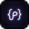

No PathR, em Candidaturas, crie uma chave da extensão e cole aqui.
Leio os campos do formulário e preencho com o que o PathR já sabe. O que eu não souber, pergunto a você ali na página. Enviar é com você.

PathR Extension
Conferindo…
No PathR, em Candidaturas, crie uma chave da extensão e cole aqui.
Leio os campos do formulário e preencho com o que o PathR já sabe. O que eu não souber, pergunto a você ali na página. Enviar é com você.